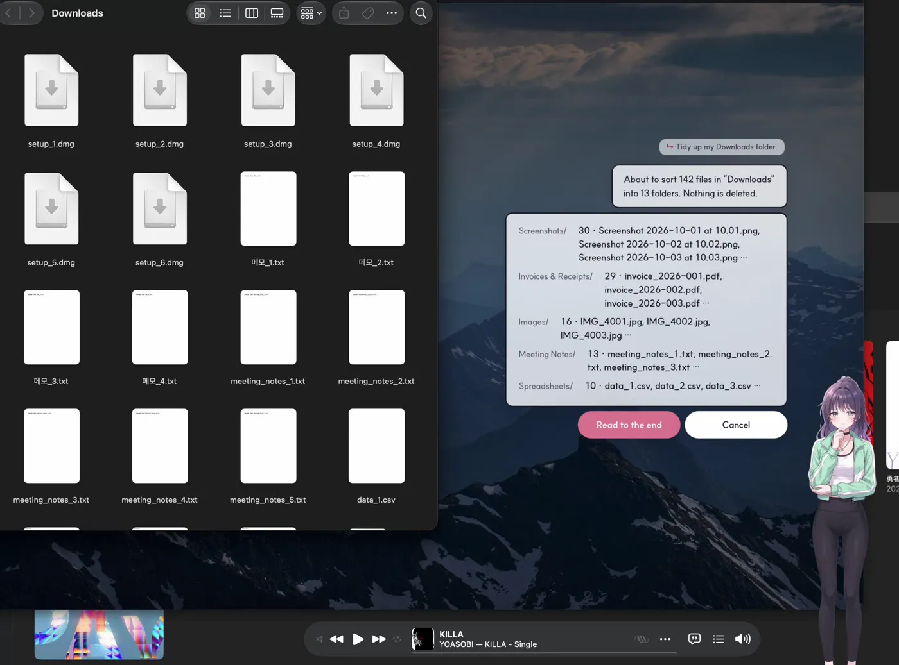
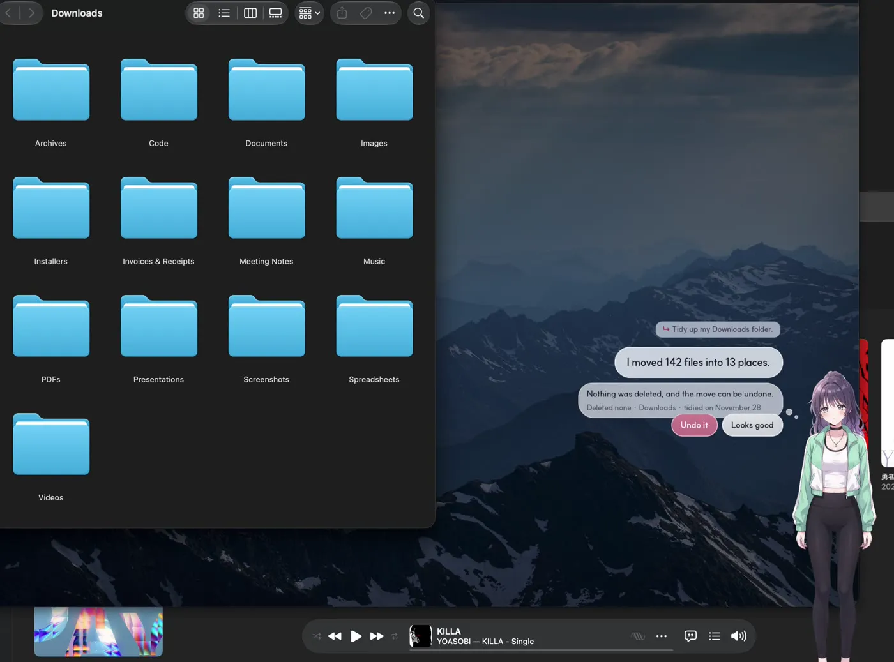

Tidy your Mac Downloads folder in one sentence
November 28, 2026 · YOOANPAPA
Hundreds of installers, screenshots and invoices in Downloads? Here is how to sort them into folders in about 5 seconds, see the plan first, and undo it if you want.
The Downloads folder is where files go to be forgotten: installers you already used, screenshots, invoices you meant to file. Sorting it by hand takes half an hour, so it never happens.
The usual ways
- By hand in Finder. Sort by kind, make folders, drag. Works, but slow, and you stop halfway.
- Stacks or smart folders. They hide the mess but don't move anything.
- Rule apps. Great once set up, but you have to write the rules first.
With Kana: just say it
- Say “Tidy up my Downloads folder.”
- Kana looks at the file names and kinds and shows the plan on one card: which folder each group goes to and how many files. Nothing is deleted.
- Press and hold to OK it. Everything moves at once.
- Changed your mind? Say “Undo what you just tidied” and every file goes back.


Real numbers
On a test Downloads folder with 142 files (screenshots, invoices, meeting notes, installers, archives and more), Kana sorted them into 13 folders such as Screenshots, Invoices & Receipts, Meeting Notes and Installers. Measured on the November 28, 2026 release: first card in about 1–3 seconds, one card, done in about 5 seconds. Undo put all 142 back.
Good to know
- Files Kana can't place are left where they are, and she tells you.
- Files you downloaded today are treated as new and left alone.
- Kana only works in folders you allowed when you set her up.
Kana: hand off your Mac chores to an AI agent
Get Kana for Mac →- AI Agents for Mac in 2026: Three Kinds and How to Choose
- Claude Code Desktop Companions: Status Pets vs. Errand Helpers
- Kana vs Meta Muse, OpenAI Dots and Claude Duet: Which AI Agent Fits Your Mac?
- Kana vs OpenClaw: A Signed Mac App or a Self-Hosted Agent?
- Let an AI Agent Compare Hotel Prices for You (With Real Links)
- Turn a Receipt Photo Into an Excel Spreadsheet on Your Mac